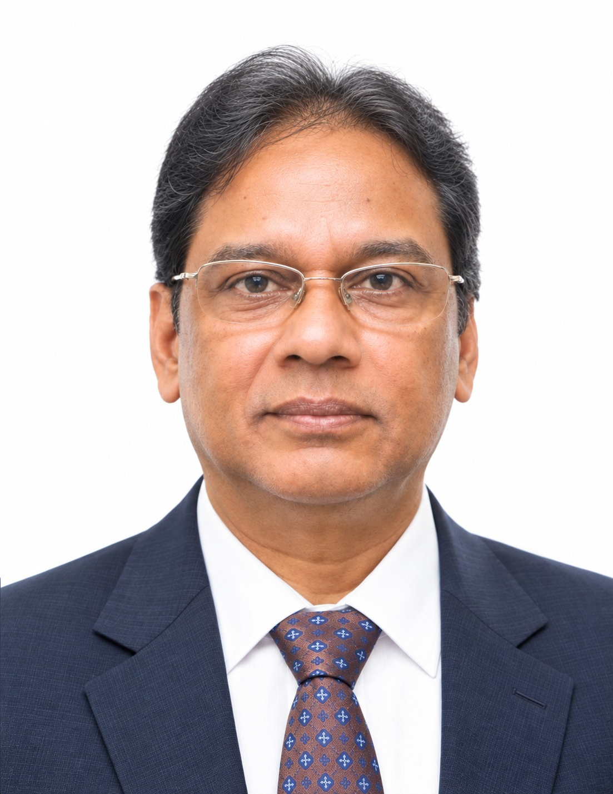
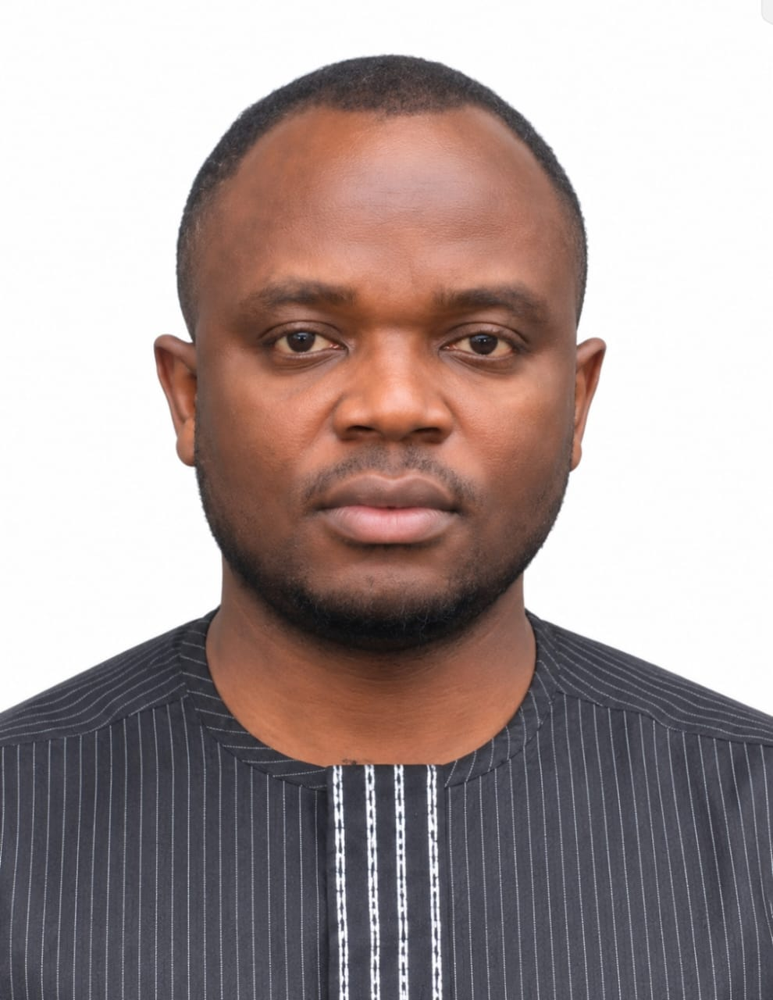
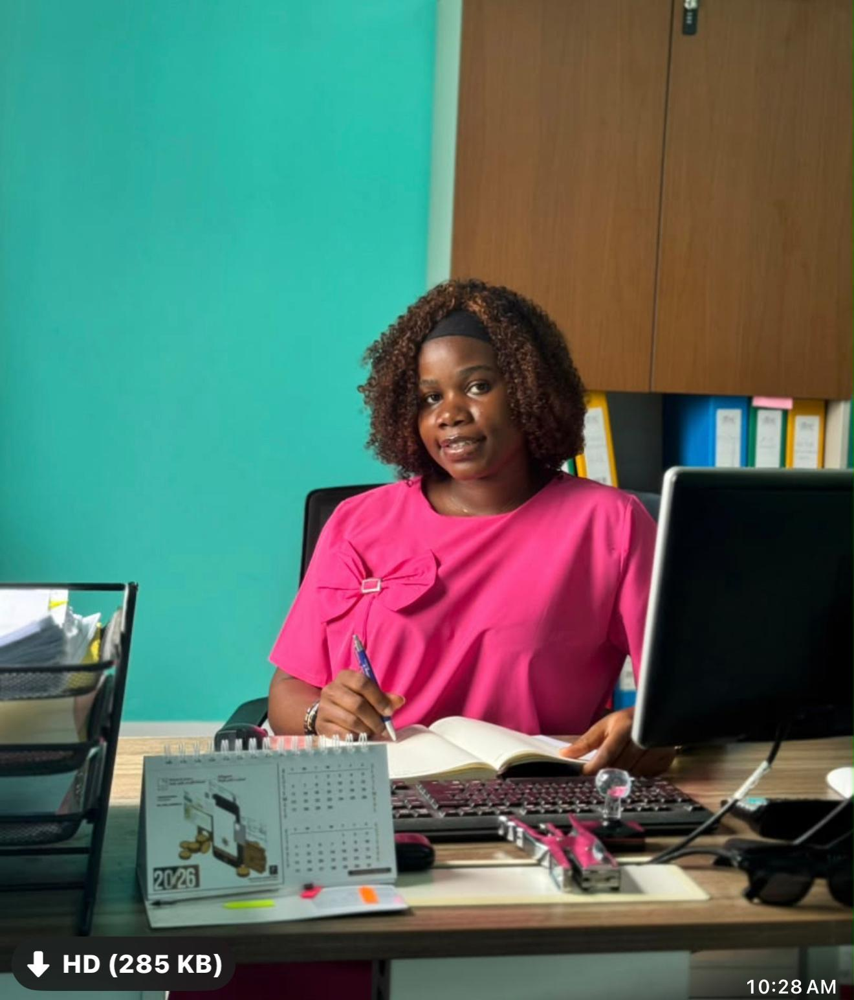
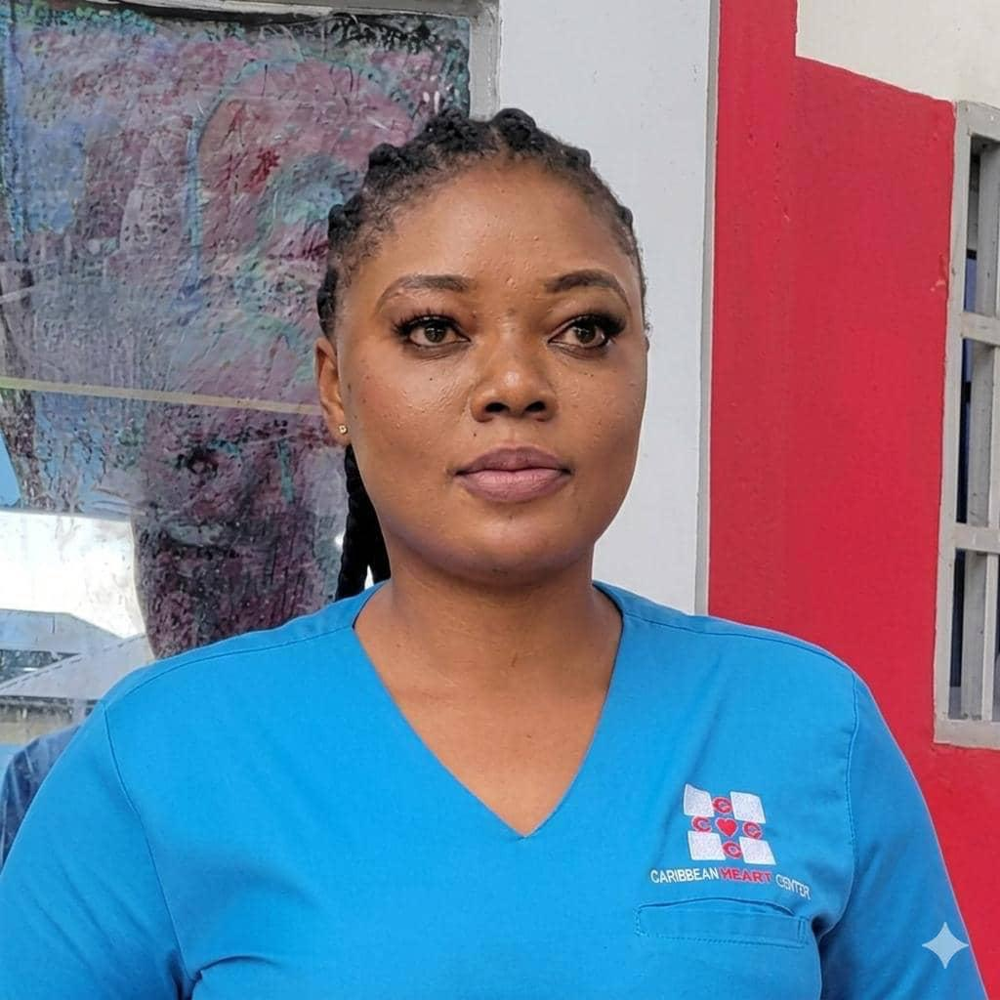

Professor Paul N. Mobit
PhD, MCCPM, DABMP
Founder, President & Chief Executive Officer
Founder and Chief Executive Officer of Cameroon Oncology Center, medical physicist, cancer researcher and healthcare leader.
View Full Profile →
Our leadership brings together clinical expertise, operational management, research, training and international collaboration in support of accessible, high-quality cancer care in Cameroon and the region.
Vision, strategy and multidisciplinary cancer care
Founder and Chief Executive Officer of Cameroon Oncology Center, medical physicist, cancer researcher and healthcare leader.
View Full Profile →
Radiation oncologist and physician-leader responsible for medical leadership and Radiation Oncology at COC.
View Radiation Oncology →
Leads the Medical Oncology service and comprehensive systemic therapy programs in coordination with the multidisciplinary oncology team.
View Medical Oncology →Provides senior clinical and academic guidance in radiation oncology and medical education.
View Radiation Oncology →Operational excellence for a stronger, more sustainable COC

Coordinates overall administrative and operational management of the Center.

Supports executive leadership and coordination of administrative and operational activities.

Leads financial management, budgeting, reporting and financial planning.

Leads workforce management, recruitment, staff development and human-resource administration.

Leads engineering, infrastructure, equipment support and technical maintenance.
Specialist collaboration strengthening cancer care at COC

International Radiation Oncology / Tele-Oncology Partner. Provides specialist radiation oncology collaboration, clinical input and professional support to the COC team.

International Medical Oncology / Tele-Oncology Partner. Supports COC through specialist medical oncology collaboration and multidisciplinary clinical input.